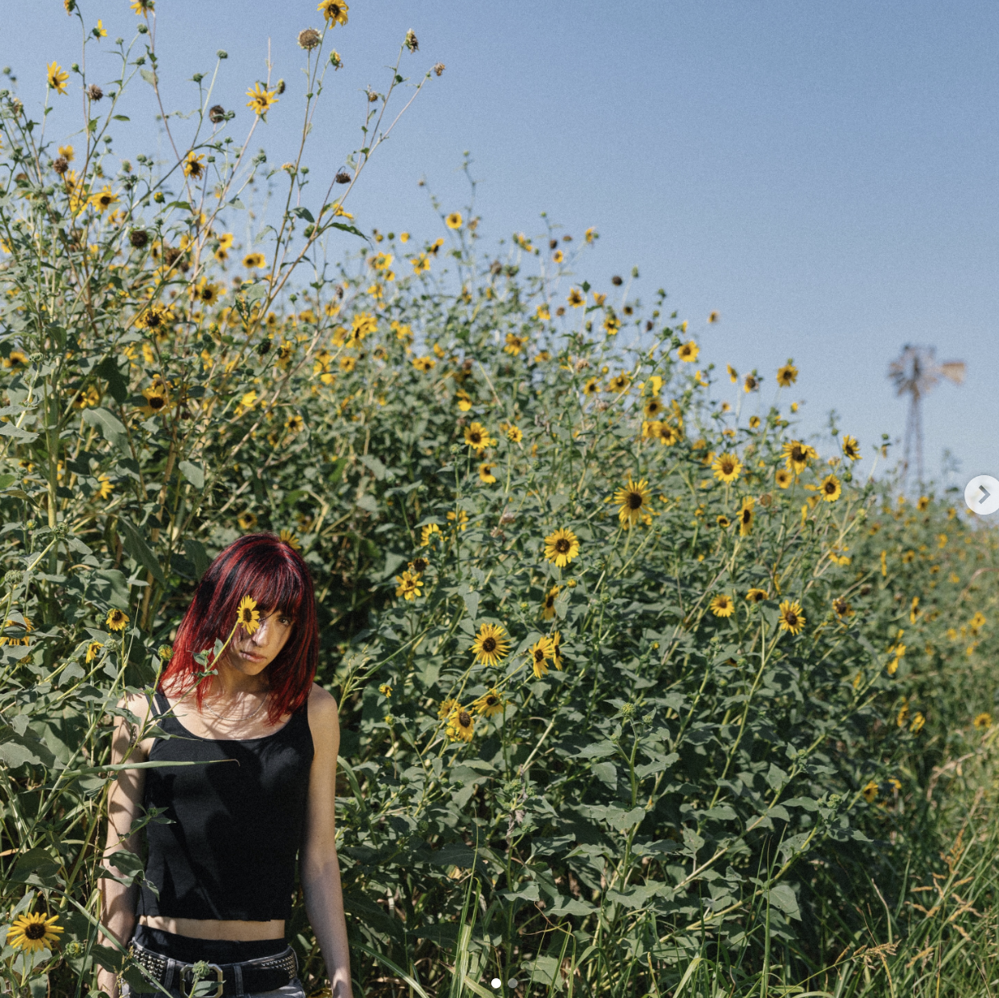

The story so far
Jane Remover is an American musician and producer born in 2003. Like many artists of their generation, they started on the internet, releasing music on SoundCloud as a teenager under earlier names, including dltzk. As Leroy, they also helped start dariacore, a fast, sample-heavy microgenre.

2021: Teen Week and Frailty
The Teen Week EP came first. On November 12, the debut album Frailty followed on DeadAir, a mix of glitch pop, emo, digicore and shoegaze that Jane Remover produced themself.
2022: Royal Blue Walls
The singles "Royal Blue Walls" and "Cage Girl" pointed toward a more guitar-driven, atmospheric sound.
2023: Census Designated
Released October 20, this second album is a shoegaze and post-rock concept album, more dreamlike than Frailty. A U.S. tour followed in 2024.
2024: A new direction
Singles such as "Flash in the Pan," "Dream Sequence," "Magic I Want U" and "How to Teleport" signaled another change in sound.
2025: Revengeseekerz and ♡
The third album, Revengeseekerz, brought back the digicore and EDM-influenced sound of the early work, with a guest appearance from Danny Brown on "Psychoboost." The six-track EP ♡ followed later that year.
Sources include Wikipedia, Apple Music, and album and concert reviews. Details may change as new music comes out.